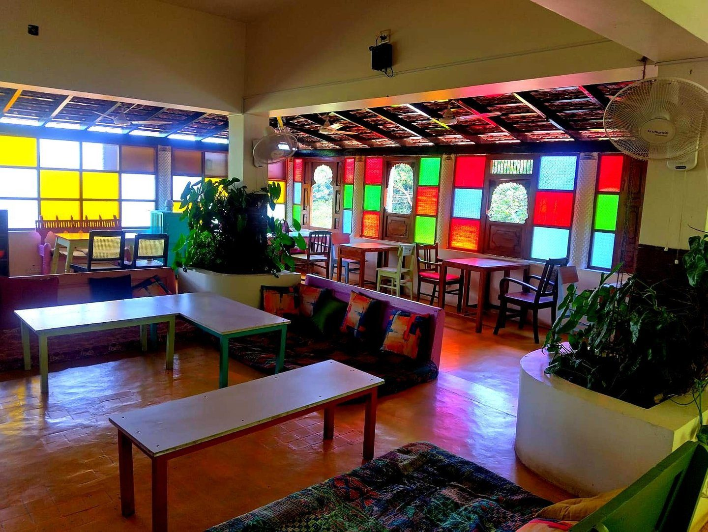
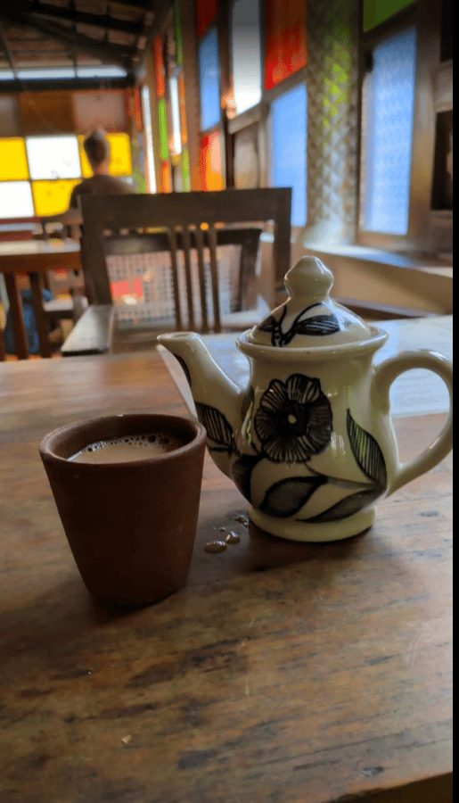
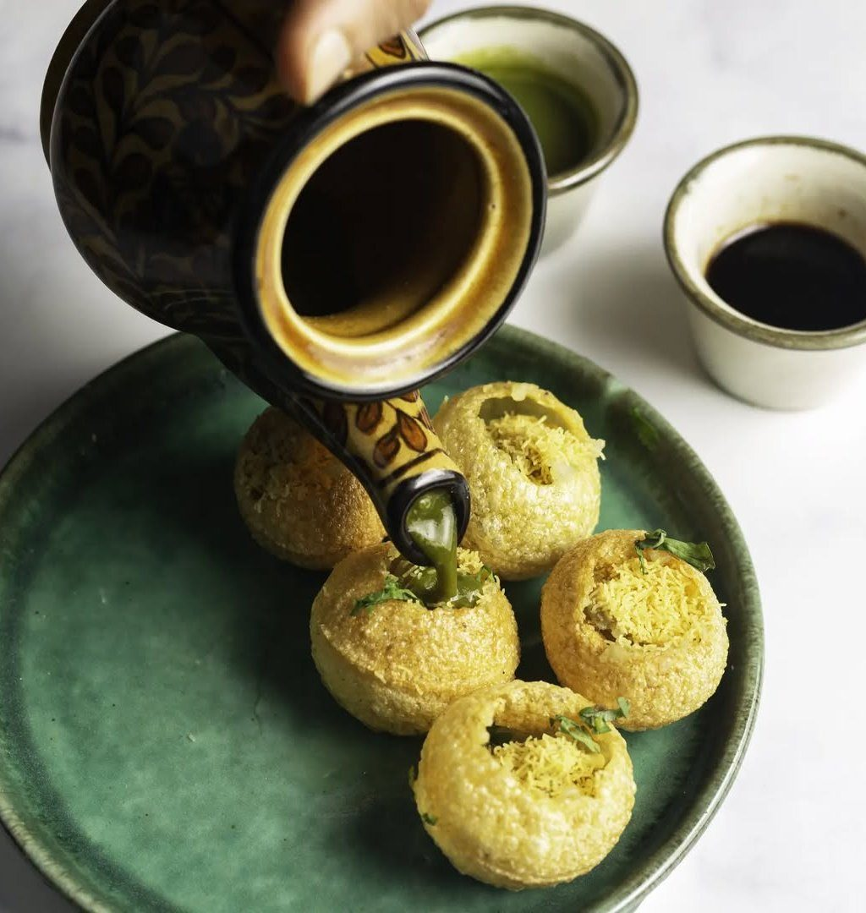
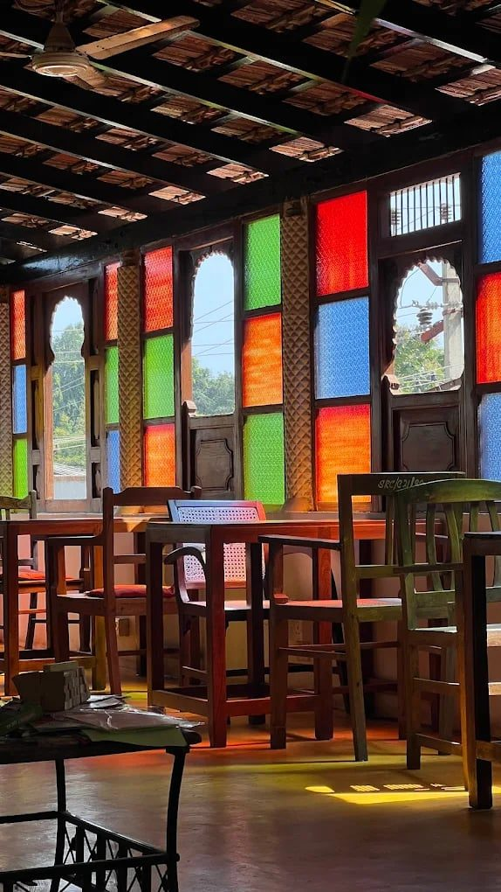

A 100% plant-based café on the forest side of Auroville, under coloured-glass windows.

The forest-side room, open every day from noon to 10 pm.
Terrassen Café is a family-friendly, 100% pure vegetarian and vegan café that has been redefining plant-based dining near Auroville since 2015.
The menu moves between Mediterranean, North Indian, Italian and American fusion plates, with fresh salads, smoothies and indulgent desserts made fresh every day.
Reader-friendly and pet friendly, with free wifi for remote workers and a creative space for artists to unwind.

Crisp gupchup filled at the table, fully plant-based.
From the café's own Italian-fusion menu.
A salad list the café calls its own pride.
Blended fresh; kombucha on the board for the evening crowd.
Great coffee, and chai by the coloured windows.
Indulgent, and made fresh every day.


Arcade Land, Auroville Road, opposite New Era School, Kuilapalayam, Bommayapalayam, Tamil Nadu 605101
Every day, 12 noon – 10 pm